Single-Cell RNA-seq DEG Analysis and Visualization
SUMMARY
Load and preprocess single-cell AnnData objects for DEG analysis
Perform DEG calculations with internal and external references
Visualize DEGs using heatmaps, dotplots, split dotplots, violins, and UMAPs
Cluster annotation - per leiden cluster degs
Condition-level analysis - Within one cluster condition degs
Configure automated downstream plotting and export results
1. Data Loading
Load clustered single-cell
.h5adfile into AnnData objectConfigure matplotlib display settings
2. Preprocessing & Log Transformation
Create unbiased
log2_countlayer to avoid normalization distortionsRun downstream preprocessing with gene set references
3. DEG Calculation
Compute DEGs across clusters with hierarchical clustering
Excursus: compare DEGs against global external references for robustness
4. Hallmark & Heatmap Analysis
Generate hallmark heatmaps to summarize cluster-specific pathways
5. Condition-Specific DEG Analysis
Run flexible DEG comparisons across clusters and conditions
Support for explicit group–reference pairs or automated sweeps
6. Split Dotplots
Visualize gene expression split by conditions within clusters
Explore scaling, normalization, and DEG-only subsetting for clarity
7. Dotplot Enhancements
Support hierarchical grouping of marker sets
Handle overlapping groups and unique gene identifiers
8. Validation & Comparisons
Compare marginal expression differences for candidate genes
Explore violin plots and UMAP side-by-side for condition effects
9. Automated Downstream Configuration
Configure heatmaps, violins, dotplots, gradients via
adata.uns["config"]Enable categorical density plots for selected
obskeys
10. Saving & Reporting
Run
sc_code.run_downstreamfor automated plots/CSVsSave processed AnnData with DEG results
Imports
[1]:
# Enable autoreloading, delete this for deploying!!!
%load_ext autoreload
%autoreload 2
%load_ext memory_profiler
[2]:
%%time
import os # Provides functions to interact with the operating system
# NOTE: UNCOMMENT IF NO GPU AVAILABLE!
os.environ["CUDA_VISIBLE_DEVICES"] = "0" # Adjust device IDs as per your setup,
# IBMS Libraries
from scToolkit import sc_code
from scToolkit import sc_config
from scToolkit import sc_plots
from scToolkit import sc_utils
from scToolkit import utils
# Some libraries (e.g., decoupler) may require setting rarely used parallelization
# backends. This function ensures all common thread settings are configured.
# utils.set_threads(10)
/projects/Research/Internal/Proximap/ssd/envs/scToolkit_check_TD/proximap_stable_28_08_2025/lib/python3.12/site-packages/louvain/__init__.py:54: UserWarning: pkg_resources is deprecated as an API. See https://setuptools.pypa.io/en/latest/pkg_resources.html. The pkg_resources package is slated for removal as early as 2025-11-30. Refrain from using this package or pin to Setuptools<81.
from pkg_resources import get_distribution, DistributionNotFound
CUDA devices visible: 0
CPU times: user 9.76 s, sys: 2.73 s, total: 12.5 s
Wall time: 22.1 s
[3]:
# Other general libraries that might be hepflull for analysis
import re # Enables regular expression matching and text processing
import time # Offers time-related functions (e.g., sleep, timestamps)
# in Python, most assignments are references (symbolic links), not copies
from copy import deepcopy as copy # Creates deep copies of complex objects
import scanpy as sc # Toolkit for analyzing single-cell gene expression data
import anndata as ad # Provides AnnData structure for annotated data matrices
import seaborn as sns # Simplifies creation of attractive statistical plots
import numpy as np # Supports numerical operations and N-dimensional arrays
import pandas as pd # Offers data structures and tools for data analysis
import matplotlib.pyplot as plt # Enables plotting and figure customization
from itertools import combinations # Generates all k-length combinations of an iterable
import scipy.stats as stats # Contains statistical distributions and test functions
# Define rcParams for customization, notebook showing is figure.dpi, reduce to not overload the nootebook sizes
plt.rcParams.update({
# "figure.figsize": (8, 6), # Figure size in inches
"savefig.dpi": 400, # Dots per inch for saved figures
"figure.dpi": 100, # Dots per inch for saved figures
#"axes.titlesize": 16, # Title font size
#"axes.labelsize": 14, # Label font size
#"xtick.labelsize": 12, # X-axis tick label size
#"ytick.labelsize": 12 # Y-axis tick label size
})
# Setup matplotlib notebook backend
%matplotlib inline
[4]:
start = time.time()
Load the Adata object
[5]:
%%time
adata = sc_code.load_h5ad("../data/03_tonsil_blood_DISCO_clustered.h5ad")
CPU times: user 10.3 s, sys: 1min 13s, total: 1min 23s
Wall time: 2min 3s
Run the downstream Preprocessing - DEG calculation
Excurs on DEG and Normalization
Unbiased Log Count Analysis
Methods like Seurat default to normalizing each cell to 10,000 total counts.This compresses dynamic range so much that log-transformation becomes nearly redundant,artificially flattening variability between cells.In theory the scaling factor would get canceld out by the logfold chance but the resultswill neverhteless look different.
Here a short snippet to create log2_counts, by useing the raw counts and apply log transformation yourself:
adata.layers["log2_count"] = adata.layers["counts"].copy()
adata.layers["log2_count"].data = np.log1p(adata.layers["log2_count"].data)
adata.X = adata.layers["log2_count"].copy()
adata = sc_code.downstream_preprocessing(
adata, ref_dict=adata.uns["genesets"]["provided_markers"]
layer="log2_count") # <- here use the unbiased log2_count
Caluclate DEGs
[6]:
adata
[6]:
AnnData object with n_obs × n_vars = 572892 × 8497
obs: 'orig.ident', 'ncount_rna', 'nfeature_rna', 'sample', 'sample_id', 'project_id', 'sample_type', 'disease', 'tissue', 'platform', 'disease_subtype', 'time_point', 'subject_id', 'age', 'gender', 'race', 'infection', 'disease_stage', 'mutation', 'predicted_cell_type', 'ct', 'sub.cluster', 'pct_gtex', 'pct_hpa', 'pct_hrt', 'pct_cellminer', 'pct_klijn', 'pct_IG_C_gene', 'pct_IG_C_pseudogene', 'pct_IG_J_gene', 'pct_IG_V_gene', 'pct_IG_V_pseudogene', 'pct_TR_C_gene', 'pct_TR_J_gene', 'pct_TR_J_pseudogene', 'pct_TR_V_gene', 'pct_TR_V_pseudogene', 'pct_lncRNA', 'pct_miRNA', 'pct_protein_coding', 'pct_ribozyme', 'pct_snRNA', 'pct_snoRNA', 'pct_pseudogenes_hg', 'n_unique', 'study_category', 'barcode', 'donor_id', 'gem_id', 'library_name', 'assay', 'sex', 'age_group', 'hospital', 'cohort_type', 'cause_for_tonsillectomy', 'is_hashed', 'preservation', 'annotation_level_1', 'annotation_level_1_probability', 'annotation_figure_1', 'annotation_20220215', 'annotation_20220619', 'annotation_20230508', 'annotation_20230508_probability', 'UMAP_1_level_1', 'UMAP_2_level_1', 'UMAP_1_20220215', 'UMAP_2_20220215', 'UMAP_1_20230508', 'UMAP_2_20230508', 'type', 'projectid', 'cell_sorting', 'subjectid', 'processstatus', 'rna_snn_res.0.8', 'seurat_clusters', 'percent.mt', 'percent.rp', 'ct_fixed', 'ct_broad', 'ct_finegrained_combined', 'n_genes', 'n_counts', 'pct_HK_gtex', 'pct_HK_cellminer', 'pct_HK_hpa', 'pct_HK_klijn', 'pct_HK_human', 'pct_HK_hrt', 'pct_HK_hk_union', 'pct_HK_hk_intersect', 'pct_HK_hk_intersect_no_hrt', 'pct_GTF_IG_genes', 'pct_GTF_processed_transcripts', 'pct_GTF_pseudogenes', 'pct_GTF_TR_genes', 'pct_GTF_RBS', 'pct_GTF_protein_coding', 'pct_HGNC_non_coding_RNA', 'pct_HGNC_other', 'pct_HGNC_protein_coding_gene', 'pct_HGNC_pseudogene', 'pct_MT', 'pct_RBS', 'pct_MTRBS', 'pct_PSEUDO', 'pct_HG', 'max_count', 'top_5_ratio', 'top_10_ratio', 'good_quality', 'leiden', 'cell_type_estimation_idxmax_ora', 'cell_type_estimation_idxmax_ora_str_str_str', 'cell_type_estimation_idxmax_ora_str_str_str_', 'cell_type_estimation_idxmax_ora_str_str__str', 'cell_type_estimation_idxmax_ora_str_str__str_', 'cell_type_estimation_idxmax_ora_str__str_str', 'cell_type_estimation_idxmax_ora_str__str_str_', 'cell_type_estimation_idxmax_ora_str__str__str', 'cell_type_estimation_idxmax_ora_str__str__str_', 'cell_type_estimation_idxmax_ora_str_str', 'cell_type_estimation_idxmax_ora_str_str_', 'cell_type_estimation_idxmax_ora_str__str', 'cell_type_estimation_idxmax_ora_str__str_', 'activation_estimation_idxmax_ora', 'all_estimation_idxmax_ora'
var: 'HK_gtex', 'HK_cellminer', 'HK_hpa', 'HK_klijn', 'HK_human', 'HK_hrt', 'HK_hk_union', 'HK_hk_intersect', 'HK_hk_intersect_no_hrt', 'GTF_IG_genes', 'GTF_processed_transcripts', 'GTF_pseudogenes', 'GTF_TR_genes', 'GTF_RBS', 'GTF_protein_coding', 'HGNC_non_coding_RNA', 'HGNC_other', 'HGNC_protein_coding_gene', 'HGNC_pseudogene', 'MT', 'RBS', 'MTRBS', 'PSEUDO', 'HG', 'n_cells', 'mean_counts', 'n_counts', 'n_unique', 'pct_cells', 'max_count', 'good_quality', 'highly_variable', 'highly_variable_rank', 'highly_variable_rank_binned', 'mean', 'std', 'genes_for_pca'
uns: 'cell_type_estimation_idxmax_ora_colors', 'cell_type_info', 'ct_broad_colors', 'genesets', 'leiden_colors', 'neighbors', 'pca', 'config', 'stats'
obsm: 'X_pca', 'X_umap', 'ora_estimate', 'ora_estimate_sig_only', 'ora_pvals'
varm: 'PCs'
layers: 'counts', 'log2norm_counts', 'norm_counts', 'scaled'
obsp: 'connectivities', 'distances'
[7]:
cell_type_markers = {
# Follicular Dendritic Cells
"FDC": ["FDCSP", "CLU", "CXCL13"],
# Plasma cells / Plasmablasts
"Plasma": ["SDC1", "CD38", "MZB1", "PRDM1", "XBP1", "IRF4", "JCHAIN",
"IGHG1", "IGHA1"],
# Naïve B cells
"Naive_B": ["MS4A1", "IGHD", "IGHM", "TCL1A", "IL4R"],
# Germinal Center B cells
"GC_B_DZ": ["MKI67", "AICDA", "BCL6", "CXCR4"], # Dark Zone
"GC_B_LZ": ["BCL6", "CXCR5", "CD83", "IRF8"], # Light Zone
# Memory B cells
"Memory_B": ["CD27", "BANK1", "FCRL4", "FCRL5", "TNFRSF13B", "IGHG1", "IGHA1"],
# Transitional B cells
"Transitional_B": ["MME", "CD24", "IGHM", "IGHD", "IL4R"],
# Dendritic Cells
"DC": ["ITGAX", "HLA-DRA", "HLA-DRB1", "CD1A", "IL3RA", "CLEC4C"],
# Epithelial Cells
"Epithelial": ["KRT19", "KRT7", "CDH1"],
# Granulocytes (Neutrophils etc.)
"Granulocyte": ["FUT4", "FCGR3A", "FCGR3B", "CEACAM8"],
# Macrophages
"Macrophage": ["CD68", "CD163", "ITGAM", "EMR1"],
# Monocytes
"Monocyte": ["CD14", "FCGR3A", "FCGR3B"],
# Myeloid (general myeloid lineage)
"Myeloid": ["CD33", "ANPEP", "ITGAM"],
# T Cells (general CD3 complex)
"T_cell": ["CD3G", "CD3D", "CD3E", "CD247"],
# CD4 T Cells
"CD4_T": ["CD4", "IL7R", "CCR7", "TCF7", "SELL"],
# CD8 T Cells
"CD8_T": ["CD8A", "CD8B", "GZMB", "PRF1", "NKG7", "GNLY"],
# NK Cells
"NK": ["NCAM1", "FCGR3A", "FCGR3B", "KLRD1", "KLRF1"],
# General immune cell marker
"Immune_general": ["PTPRC"]
}
adata.uns["genesets"]["provided_markers"] = cell_type_markers
[8]:
# Set the cell types
leiden_dict = {"0": "C0: B-cells",
"1": "C1: T-cells",
"2": "C2: Myeloid-cells",
"3": "C3: T-cells",
"4": "C4: B-cells"}
adata.obs["leiden"] = adata.obs["leiden"].map(leiden_dict)
[11]:
sc_plots.plot_umap(adata, keys="leiden", figsize=(5, 4),
save_path="../Figures/04_umap_clusters.png")
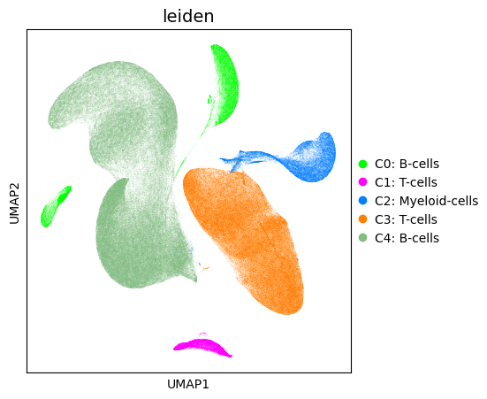
[10]:
## %%time
# The input type is only needed if you don't use defaults "log2norm_counts"
# adata.X = adata.layers["your_pointlessly_renamed_log2norm_counts"].copy()
# This function calculates a hierarchichal clustering of the clusters and the DEGs in parallel
# NOTE: This function returns the object, because we might make changes, that inflict pars of the symbolic links
adata = sc_code.downstream_preprocessing(
adata, ref_dict=adata.uns["genesets"]["provided_markers"])
INFO:sc_code.py:downstream_preprocessing - Run DEGs...
INFO:sc_code.py:downstream_preprocessing - DEG calculation took 953.55
INFO:sc_code.py:downstream_preprocessing - ################################################################################
Finished Downstream Preprocessing after 953.55 seconds
################################################################################
Plot DEGs as dotplot
[13]:
adata.uns["rank_genes_groups"]
[13]:
| group | reference | names | scores | logfoldchanges | pvals | pvals_adj | pct_nz_group | pct_nz_reference | |
|---|---|---|---|---|---|---|---|---|---|
| 16994 | C0: B-cells | rest | KCNQ5 | 454.622772 | 1.953331 | 0.000000 | 0.000000 | 0.650834 | 0.033480 |
| 16995 | C0: B-cells | rest | CDK14 | 451.340424 | 1.867490 | 0.000000 | 0.000000 | 0.850659 | 0.085902 |
| 16996 | C0: B-cells | rest | TRIO | 434.228729 | 1.298599 | 0.000000 | 0.000000 | 0.738389 | 0.060328 |
| 16997 | C0: B-cells | rest | PRKCE | 423.268219 | 1.569122 | 0.000000 | 0.000000 | 0.746833 | 0.069655 |
| 16998 | C0: B-cells | rest | KHDRBS2 | 421.959229 | 1.486516 | 0.000000 | 0.000000 | 0.560730 | 0.027851 |
| ... | ... | ... | ... | ... | ... | ... | ... | ... | ... |
| 33983 | C4: B-cells | rest | PTER | -0.100637 | -0.018807 | 0.919839 | 0.920272 | 0.079099 | 0.077859 |
| 33984 | C4: B-cells | rest | LINC00271 | -0.097525 | -0.001811 | 0.922310 | 0.922635 | 0.007079 | 0.007091 |
| 33985 | C4: B-cells | rest | TAF15 | 0.082268 | -0.040145 | 0.934434 | 0.934654 | 0.360524 | 0.341245 |
| 33986 | C4: B-cells | rest | RNF19B | 0.073144 | -0.017293 | 0.941692 | 0.941803 | 0.053476 | 0.052735 |
| 33987 | C4: B-cells | rest | RBBP6 | 0.070250 | -0.029647 | 0.943995 | 0.943995 | 0.301742 | 0.289748 |
42485 rows × 9 columns
[19]:
# NOTE: Via subset_kwargs you have full control over deg filtering and
# via plot_clustered_dotplot_kwargs over the dotplot,
# check the function definitions for more info.
# Alternative you can manipulate the deg dataframe directly and parse
# it with sc_plots.plot_DEG_dotplot(..., deg_df=deg_df, ...)
sc_plots.plot_DEG_dotplot(
adata,
groupby="leiden",
deg_key="rank_genes_groups",
subset_kwargs={"n_genes": 5}) # for top 5
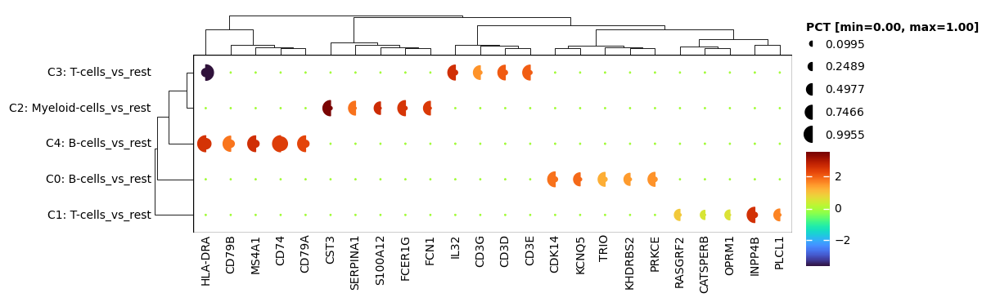
EXCOURS: Caluclate DEGs with global external reference
- Consistency Across ClustersEvery cluster is compared to the same baseline, avoiding dependence on arbitrary or unstable in-dataset references.
- Clear Biological InterpretationDEGs reflect deviations from a biologically meaningful standard, improving interpretability.
- Reduced Batch and Overclustering ArtifactsIf clustering is imperfect—e.g., the same cell type split into multiple clusterse.g. due to batch effects—internal comparisons will blur true cell type markers.An external baseline anchors the analysis, ensuring markers remain sharp evenwhen cluster identities are fragmented.
- Balanced Statistical ComparisonsTests like Wilcoxon assume comparable group sizes; using all other clusters as a reference can create extreme size imbalances, reducing statistical power and inflating false positives. An external reference provides a controlled, consistent group size for fair comparisons.
In short, an external reference turns DEG analysis into a context-aware, biologically grounded approach that is more robust to clustering imperfections.
[17]:
# As an example we take the cluster 0 here, but can also be data from different studys with clean and defined celltypes or whatever.
reference_adata = adata[adata.obs["leiden"] == "C0: B-cells"].copy()
# NOTE: because we merged the same cells, the obs names will be not unique anymore, so we make them unique
reference_adata.obs_names = [x + "_ref" for x in reference_adata.obs_names]
# Alternatively you can call the buggy adata function after merging
# adata_merged.obs_names_make_unique()
[20]:
# Merge the two objects before deg calculation
adata_merged = sc_utils.merge_for_deg(
adata,
reference_adata,
groupby="leiden", # This key must be in the obs of the adata.
reference_name="0_")
[21]:
# Here we can see it worked we have 3102 cells with 0_ and 0
vc = adata_merged.obs["leiden"].value_counts()
display(vc[vc.index.isin(["0", "0_"])])
# and now we calculate the degs for each cluster vs te "0_",
sc_utils.calc_DEGs(adata_merged, groupby="leiden", references="0_")
# and set the Degs into the original adata
adata.uns["vs_reference_degs"] = adata_merged.uns["rank_genes_groups"].copy()
# and print a check that the all combinations of group and ref end in 0_
utils.join_categorical_columns(adata.uns["vs_reference_degs"], keys=["group", "reference"])["joined"].unique()
leiden
0_ 38844
Name: count, dtype: int64
[21]:
array(['C1: T-cells_0_', 'C2: Myeloid-cells_0_', 'C3: T-cells_0_',
'C4: B-cells_0_'], dtype=object)
Hallmark heatmap per cluster
[71]:
# We can show the significant hallmarks (significance by overlap with the DEGs)
# Options are: "total_count", "total_scores", "total_normalized_by_genes", "normalized_total_scores_by_genes"
# For color scale improvement you can use a use_minmax scaler-
sc_plots.plot_hallmark_group_heatmap(
adata, score_to_use="normalized_total_scores_by_genes",
subset_pct=0.5,
use_minmax=True,
save_path="../Figures/04_hallmark_HEATMAP_ct.pdf"
)
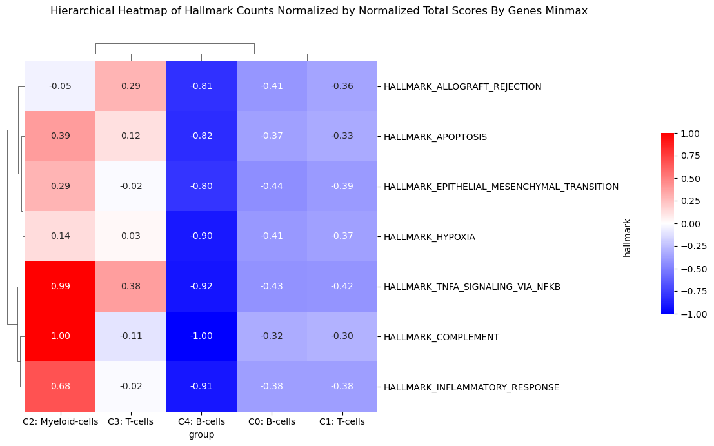
Condition Comparison plots
Run the DEG calculation for the within the clusters to compare conditions
Usage explanation for run_cluster_condition_deg
Overview
Key modes
Mode 1 (group_ref): Provide exact
[group, reference]pairs directly (e.g.,group_ref=[["0_A", "0_B"]]).Mode 2 (groups + references): Provide parallel lists of
groupsandreferences.Mode 4 (groups + single reference): Provide
groupslist and a single stringreferences, which will be broadcasted to match each group.Mode 5 (group_ref_cond): Provide condition pairs to expand automatically across each cluster.
Mode 6 (group_cond + reference_cond): Specify conditions to compare across each cluster.
Mode 7 (reference_cond only): Default sweep: compare all other conditions to the reference in each cluster.
Mode 9 (default sweep): Compare every condition against every other condition within each cluster.
Example usage
```python import pandas as pd import numpy as np import anndata as ad
Create dummy AnnData
obs = pd.DataFrame({ “leiden”: [“0”, “0”, “1”, “1”, “2”, “2”], “condition”: [“A”, “B”, “A”, “C”, “A”, “B”] }) X = np.random.rand(obs.shape[0], 5) adata = ad.AnnData(X=X, obs=obs)
Example: explicit group_ref
res = run_cluster_condition_deg(adata, group_ref=[[“0_A”, “0_B”]])
Example: groups and references
res = run_cluster_condition_deg(adata, groups=[“0_A”], references=[“0_B”])
Example: auto expand per cluster
res = run_cluster_condition_deg(adata, group_cond=”A”, reference_cond=”B”)
Example: default sweep comparing all conditions
res = run_cluster_condition_deg(adata)
[36]:
adata
[36]:
AnnData object with n_obs × n_vars = 572892 × 8497
obs: 'orig.ident', 'ncount_rna', 'nfeature_rna', 'sample', 'sample_id', 'project_id', 'sample_type', 'disease', 'tissue', 'platform', 'disease_subtype', 'time_point', 'subject_id', 'age', 'gender', 'race', 'infection', 'disease_stage', 'mutation', 'predicted_cell_type', 'ct', 'sub.cluster', 'pct_gtex', 'pct_hpa', 'pct_hrt', 'pct_cellminer', 'pct_klijn', 'pct_IG_C_gene', 'pct_IG_C_pseudogene', 'pct_IG_J_gene', 'pct_IG_V_gene', 'pct_IG_V_pseudogene', 'pct_TR_C_gene', 'pct_TR_J_gene', 'pct_TR_J_pseudogene', 'pct_TR_V_gene', 'pct_TR_V_pseudogene', 'pct_lncRNA', 'pct_miRNA', 'pct_protein_coding', 'pct_ribozyme', 'pct_snRNA', 'pct_snoRNA', 'pct_pseudogenes_hg', 'n_unique', 'study_category', 'barcode', 'donor_id', 'gem_id', 'library_name', 'assay', 'sex', 'age_group', 'hospital', 'cohort_type', 'cause_for_tonsillectomy', 'is_hashed', 'preservation', 'annotation_level_1', 'annotation_level_1_probability', 'annotation_figure_1', 'annotation_20220215', 'annotation_20220619', 'annotation_20230508', 'annotation_20230508_probability', 'UMAP_1_level_1', 'UMAP_2_level_1', 'UMAP_1_20220215', 'UMAP_2_20220215', 'UMAP_1_20230508', 'UMAP_2_20230508', 'type', 'projectid', 'cell_sorting', 'subjectid', 'processstatus', 'rna_snn_res.0.8', 'seurat_clusters', 'percent.mt', 'percent.rp', 'ct_fixed', 'ct_broad', 'ct_finegrained_combined', 'n_genes', 'n_counts', 'pct_HK_gtex', 'pct_HK_cellminer', 'pct_HK_hpa', 'pct_HK_klijn', 'pct_HK_human', 'pct_HK_hrt', 'pct_HK_hk_union', 'pct_HK_hk_intersect', 'pct_HK_hk_intersect_no_hrt', 'pct_GTF_IG_genes', 'pct_GTF_processed_transcripts', 'pct_GTF_pseudogenes', 'pct_GTF_TR_genes', 'pct_GTF_RBS', 'pct_GTF_protein_coding', 'pct_HGNC_non_coding_RNA', 'pct_HGNC_other', 'pct_HGNC_protein_coding_gene', 'pct_HGNC_pseudogene', 'pct_MT', 'pct_RBS', 'pct_MTRBS', 'pct_PSEUDO', 'pct_HG', 'max_count', 'top_5_ratio', 'top_10_ratio', 'good_quality', 'leiden', 'cell_type_estimation_idxmax_ora', 'cell_type_estimation_idxmax_ora_str_str_str', 'cell_type_estimation_idxmax_ora_str_str_str_', 'cell_type_estimation_idxmax_ora_str_str__str', 'cell_type_estimation_idxmax_ora_str_str__str_', 'cell_type_estimation_idxmax_ora_str__str_str', 'cell_type_estimation_idxmax_ora_str__str_str_', 'cell_type_estimation_idxmax_ora_str__str__str', 'cell_type_estimation_idxmax_ora_str__str__str_', 'cell_type_estimation_idxmax_ora_str_str', 'cell_type_estimation_idxmax_ora_str_str_', 'cell_type_estimation_idxmax_ora_str__str', 'cell_type_estimation_idxmax_ora_str__str_', 'activation_estimation_idxmax_ora', 'all_estimation_idxmax_ora'
var: 'HK_gtex', 'HK_cellminer', 'HK_hpa', 'HK_klijn', 'HK_human', 'HK_hrt', 'HK_hk_union', 'HK_hk_intersect', 'HK_hk_intersect_no_hrt', 'GTF_IG_genes', 'GTF_processed_transcripts', 'GTF_pseudogenes', 'GTF_TR_genes', 'GTF_RBS', 'GTF_protein_coding', 'HGNC_non_coding_RNA', 'HGNC_other', 'HGNC_protein_coding_gene', 'HGNC_pseudogene', 'MT', 'RBS', 'MTRBS', 'PSEUDO', 'HG', 'n_cells', 'mean_counts', 'n_counts', 'n_unique', 'pct_cells', 'max_count', 'good_quality', 'highly_variable', 'highly_variable_rank', 'highly_variable_rank_binned', 'mean', 'std', 'genes_for_pca'
uns: 'cell_type_estimation_idxmax_ora_colors', 'cell_type_info', 'ct_broad_colors', 'genesets', 'leiden_colors', 'neighbors', 'pca', 'config', 'stats', 'highly_variables', 'ref_dict_upd', 'ref_dict_upd_subs', 'rank_genes_groups', 'vs_reference_degs'
obsm: 'X_pca', 'X_umap', 'ora_estimate', 'ora_estimate_sig_only', 'ora_pvals'
varm: 'PCs'
layers: 'counts', 'log2norm_counts', 'norm_counts', 'scaled'
obsp: 'connectivities', 'distances'
[40]:
%%time
cluster_key = "leiden"
condition_obs_key = "tissue"
conditions = ["blood", "tonsil"]
deg_key = "blood_vs_tonsil_per_cluster"
# sc_utils.run_cluster_condition_deg automatically merges the keys "leiden" and "condititon"
# there is also utils.join_categorical_columns which also eighter returns a new col or alters the dataframe inplace
# utils.join_categorical_columns(adata.obs, [cluster_key, deg_obs_key], new_col=deg_obs_key, inplace=True)
sc_utils.calc_DEGs_multi_group(
adata, cluster_key=cluster_key, condition_obs_key=condition_obs_key,
group_ref_cond=[conditions], min_cells=100)
# NOTE: This will also be neccessary for the automated usage of "condition_obs_key" in the
# sc_plots.plot_DEG_dotplot( ..., condition_obs_key=condition_obs_key, ...)
# sc_plots.plot_dotplot(..., condition_obs_key=condition_obs_key, ...)
# sc_plots.plot_violin(..., condition_obs_key=condition_obs_key, ...)
WARNING:sc_utils.py:calc_DEGs_multi_group - Skipping invalid group-ref pair: C1: T-cells_blood vs C1: T-cells_tonsil
WARNING:sc_utils.py:calc_DEGs_multi_group - Skipping invalid group-ref pair: C1: T-cells_blood vs C1: T-cells_tonsil
WARNING:sc_utils.py:check_ct_abundances - Removed low-abundance pair: C0: B-cells_blood (11 cells) vs C0: B-cells_tonsil (38833 cells)
WARNING:sc_utils.py:check_ct_abundances - Removed low-abundance pair: C0: B-cells_blood (11 cells) vs C0: B-cells_tonsil (38833 cells)
CPU times: user 32min 20s, sys: 6min 58s, total: 39min 19s
Wall time: 8min 7s
[41]:
adata.uns["tissue_per_leiden_rank_genes_groups"]
[41]:
| group | reference | names | scores | logfoldchanges | pvals | pvals_adj | pct_nz_group | pct_nz_reference | |
|---|---|---|---|---|---|---|---|---|---|
| 0 | C2: Myeloid-cells_blood | C2: Myeloid-cells_tonsil | SERPINF1 | -129.327545 | -1.142115 | 0.000000 | 0.000000 | 0.033338 | 0.601083 |
| 1 | C2: Myeloid-cells_blood | C2: Myeloid-cells_tonsil | HLA-DQA1 | -127.625046 | -2.472059 | 0.000000 | 0.000000 | 0.239194 | 0.881849 |
| 2 | C2: Myeloid-cells_blood | C2: Myeloid-cells_tonsil | S100A8 | 120.475357 | 4.771376 | 0.000000 | 0.000000 | 0.923935 | 0.176219 |
| 3 | C2: Myeloid-cells_blood | C2: Myeloid-cells_tonsil | S100A9 | 119.543098 | 4.105957 | 0.000000 | 0.000000 | 0.946088 | 0.267414 |
| 4 | C2: Myeloid-cells_blood | C2: Myeloid-cells_tonsil | DNASE1L3 | -113.654800 | -1.266246 | 0.000000 | 0.000000 | 0.012115 | 0.425746 |
| ... | ... | ... | ... | ... | ... | ... | ... | ... | ... |
| 25477 | C4: B-cells_blood | C4: B-cells_tonsil | NIPAL2 | 0.014331 | 0.015057 | 0.988566 | 0.989148 | 0.041297 | 0.041880 |
| 25478 | C4: B-cells_blood | C4: B-cells_tonsil | TRGV5 | -0.011080 | 0.000668 | 0.991160 | 0.991627 | 0.001064 | 0.001068 |
| 25479 | C4: B-cells_blood | C4: B-cells_tonsil | IL17RA | 0.008936 | 0.021608 | 0.992870 | 0.993221 | 0.049670 | 0.050641 |
| 25480 | C4: B-cells_blood | C4: B-cells_tonsil | FARP2 | -0.001452 | 0.043365 | 0.998842 | 0.999077 | 0.087987 | 0.091816 |
| 25481 | C4: B-cells_blood | C4: B-cells_tonsil | SLCO4A1 | 0.000845 | 0.015773 | 0.999326 | 0.999444 | 0.019797 | 0.020020 |
25482 rows × 9 columns
Split Dotplot
Split DEG Dotplot
[44]:
# NOTE: Via subset_kwargs you have full control over deg filtering and
# via plot_clustered_dotplot_kwargs over the dotplot,
# check the function definitions for more info.
sc_plots.plot_DEG_dotplot(
adata,
deg_df=adata.uns["tissue_per_leiden_rank_genes_groups"],
subset_kwargs={"n_genes": 10},
plot_group_dotplot_kwargs={
"save_path": "../Figures/04_split_dotplot_1_vs_1.pdf"}
)
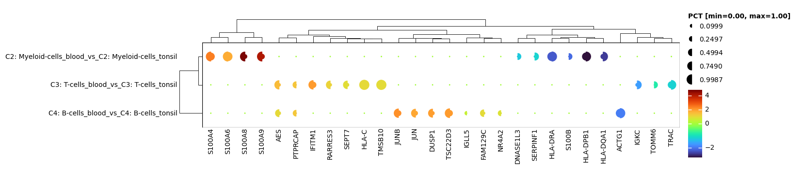
Split Gene Dotplot
cluster_key) andcondition_obs_key),deg_obs_key) so that each unique combination of cluster and conditiondeg_key) to store the DEGSummary of steps
- Combine keys and Calculate DEGs:run the run_cluster_condition_deg().
- Run function:Call your function (e.g., gene set scoring, enrichment, etc.) usingthe DEGs from
deg_key.
[47]:
# Get some markers to plot
ct_ref = sc_utils.get_valide_ref_dicts(adata, adata.uns["genesets"]["cell_type_markers"])[0]
ref = ct_ref["macrophage_cells"]
[49]:
# Full plot
sc_plots.plot_dotplot(
adata=adata,
keys=ref,
groupby="leiden",
condition_obs_key=condition_obs_key,
vs=conditions)
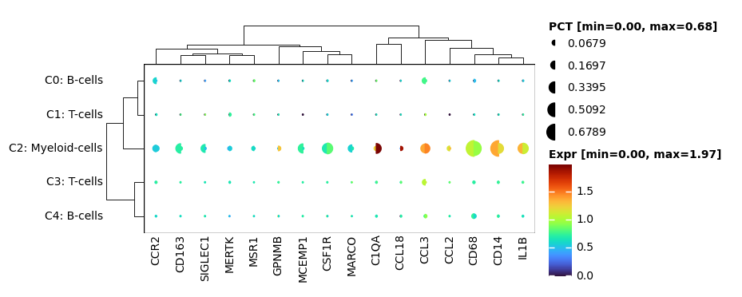
Subsetting adata objects to conditions/DEGs only
[52]:
# Subsetted to significant genes and clusters only
# NOTE: the filtering is unstringent like before, it's just a showcase
adata_out, retained_ref = sc_utils.get_adata_subset(
adata=adata,
vs=conditions,
ref=ref,
condition_obs_key=condition_obs_key,
# layer="log2norm_counts",
layer="log2norm_counts",
cluster_key=cluster_key,
subset_to_degs=True,
mask_non_significant_groups=True,
scale_axis=None,
when_to_scale="after",
kwarg_filter_genes={"perc": 0.1, "p_val_cutoff": 1e-3, "lfc": 0.5},
kwarg_filter_cells={"perc": 0.1, "p_val_cutoff": 1e-3, "lfc": 0.5},
)
sc_plots.plot_dotplot(
adata=adata_out,
keys=retained_ref,
groupby="leiden",
condition_obs_key=condition_obs_key,
vs=conditions,
)
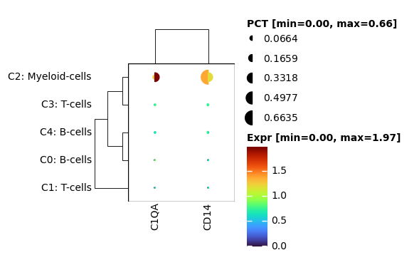
EXCOURSE: Transforming for visibility
[20]:
# #########################################################
# Create synthetic AnnData with 2 groups, 2 conditions, 2 genes
gene_names = ["GeneX", "GeneY"]
group_labels = ["Group1", "Group2"]
condition_labels = ["Cond1", "Cond2"]
num_cells = 50004
adata_demo = sc.AnnData(
X=np.zeros((num_cells, len(gene_names))),
obs=pd.DataFrame({
"group_id": np.repeat(group_labels, num_cells // 2),
"condition_id": np.tile(np.repeat(condition_labels, num_cells // 4), 2),
}),
var=pd.DataFrame(index=gene_names),
)
adata_demo.obs["group_id"] = adata_demo.obs["group_id"].astype("category")
adata_demo.obs["condition_id"] = adata_demo.obs["condition_id"].astype("category")
# #########################################################
# Introduce contrasting expression differences
# GeneX: large difference between conditions in Group1
# GeneY: small difference between conditions in Group2
rng = np.random.default_rng(42)
# #########################################################
# Assign base expression with differences between conditions/groups
adata_demo.X[:, 0] = np.select(
[
(adata_demo.obs["group_id"] == "Group1")
& (adata_demo.obs["condition_id"] == "Cond1"),
(adata_demo.obs["group_id"] == "Group1")
& (adata_demo.obs["condition_id"] == "Cond2"),
(adata_demo.obs["group_id"] == "Group2")
& (adata_demo.obs["condition_id"] == "Cond1"),
(adata_demo.obs["group_id"] == "Group2")
& (adata_demo.obs["condition_id"] == "Cond2"),
],
[1, 1, 3.2, 3.0],
) + rng.normal(0, 0.3, adata_demo.shape[0])
adata_demo.X[:, 1] = np.select(
[
(adata_demo.obs["group_id"] == "Group1")
& (adata_demo.obs["condition_id"] == "Cond1"),
(adata_demo.obs["group_id"] == "Group1")
& (adata_demo.obs["condition_id"] == "Cond2"),
(adata_demo.obs["group_id"] == "Group2")
& (adata_demo.obs["condition_id"] == "Cond1"),
(adata_demo.obs["group_id"] == "Group2")
& (adata_demo.obs["condition_id"] == "Cond2"),
],
[3.1, 3.0, 1, 20],
) + rng.normal(0, 0.05, adata_demo.shape[0])
# #########################################################
# Default
sc_plots.plot_dotplot(
adata=adata_demo,
keys=["GeneX", "GeneY"],
groupby="group_id",
condition_obs_key="condition_id",
vs=["Cond1", "Cond2"],
)
# #########################################################
# Scale Columns - Overestimates Group2 GeneX
sc_plots.plot_dotplot(
adata=adata_demo,
keys=["GeneX", "GeneY"],
groupby="group_id",
condition_obs_key="condition_id",
vs=["Cond1", "Cond2"],
plot_group_dotplot_kwargs={"minmax_scale_axis": 0},
)
# #########################################################
# Scale Rows - Overestimates Group1 GeneY
sc_plots.plot_dotplot(
adata=adata_demo,
keys=["GeneX", "GeneY"],
groupby="group_id",
condition_obs_key="condition_id",
vs=["Cond1", "Cond2"],
plot_group_dotplot_kwargs={
"minmax_scale_axis": 1,
},
)
/ssd/projects/Proximap/mambaforge/scanpy_stable_25_04_latest/lib/python3.12/site-packages/anndata/_core/aligned_df.py:68: ImplicitModificationWarning: Transforming to str index.
warnings.warn("Transforming to str index.", ImplicitModificationWarning)
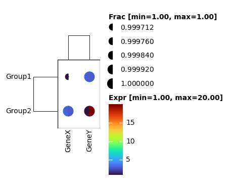
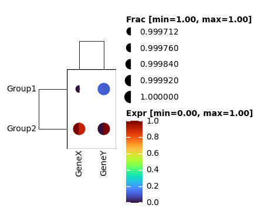
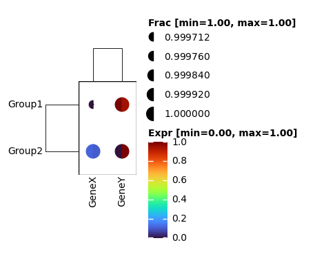
Violins
[53]:
sc_plots.plot_violin(
adata,
["HLA-A", "HLA-B", "HLA-C"],
groupby="disease",
condition_obs_key=condition_obs_key,
conditions=conditions,
stripplot_kwargs={"size": 1, "alpha": .3},
base_figsize=(5, 5)
)
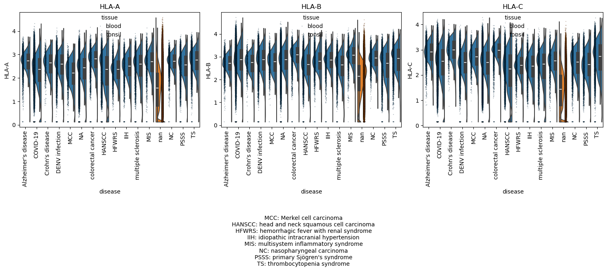
Condition Umap side by side
[56]:
adata
[56]:
AnnData object with n_obs × n_vars = 572892 × 8497
obs: 'orig.ident', 'ncount_rna', 'nfeature_rna', 'sample', 'sample_id', 'project_id', 'sample_type', 'disease', 'tissue', 'platform', 'disease_subtype', 'time_point', 'subject_id', 'age', 'gender', 'race', 'infection', 'disease_stage', 'mutation', 'predicted_cell_type', 'ct', 'sub.cluster', 'pct_gtex', 'pct_hpa', 'pct_hrt', 'pct_cellminer', 'pct_klijn', 'pct_IG_C_gene', 'pct_IG_C_pseudogene', 'pct_IG_J_gene', 'pct_IG_V_gene', 'pct_IG_V_pseudogene', 'pct_TR_C_gene', 'pct_TR_J_gene', 'pct_TR_J_pseudogene', 'pct_TR_V_gene', 'pct_TR_V_pseudogene', 'pct_lncRNA', 'pct_miRNA', 'pct_protein_coding', 'pct_ribozyme', 'pct_snRNA', 'pct_snoRNA', 'pct_pseudogenes_hg', 'n_unique', 'study_category', 'barcode', 'donor_id', 'gem_id', 'library_name', 'assay', 'sex', 'age_group', 'hospital', 'cohort_type', 'cause_for_tonsillectomy', 'is_hashed', 'preservation', 'annotation_level_1', 'annotation_level_1_probability', 'annotation_figure_1', 'annotation_20220215', 'annotation_20220619', 'annotation_20230508', 'annotation_20230508_probability', 'UMAP_1_level_1', 'UMAP_2_level_1', 'UMAP_1_20220215', 'UMAP_2_20220215', 'UMAP_1_20230508', 'UMAP_2_20230508', 'type', 'projectid', 'cell_sorting', 'subjectid', 'processstatus', 'rna_snn_res.0.8', 'seurat_clusters', 'percent.mt', 'percent.rp', 'ct_fixed', 'ct_broad', 'ct_finegrained_combined', 'n_genes', 'n_counts', 'pct_HK_gtex', 'pct_HK_cellminer', 'pct_HK_hpa', 'pct_HK_klijn', 'pct_HK_human', 'pct_HK_hrt', 'pct_HK_hk_union', 'pct_HK_hk_intersect', 'pct_HK_hk_intersect_no_hrt', 'pct_GTF_IG_genes', 'pct_GTF_processed_transcripts', 'pct_GTF_pseudogenes', 'pct_GTF_TR_genes', 'pct_GTF_RBS', 'pct_GTF_protein_coding', 'pct_HGNC_non_coding_RNA', 'pct_HGNC_other', 'pct_HGNC_protein_coding_gene', 'pct_HGNC_pseudogene', 'pct_MT', 'pct_RBS', 'pct_MTRBS', 'pct_PSEUDO', 'pct_HG', 'max_count', 'top_5_ratio', 'top_10_ratio', 'good_quality', 'leiden', 'cell_type_estimation_idxmax_ora', 'cell_type_estimation_idxmax_ora_str_str_str', 'cell_type_estimation_idxmax_ora_str_str_str_', 'cell_type_estimation_idxmax_ora_str_str__str', 'cell_type_estimation_idxmax_ora_str_str__str_', 'cell_type_estimation_idxmax_ora_str__str_str', 'cell_type_estimation_idxmax_ora_str__str_str_', 'cell_type_estimation_idxmax_ora_str__str__str', 'cell_type_estimation_idxmax_ora_str__str__str_', 'cell_type_estimation_idxmax_ora_str_str', 'cell_type_estimation_idxmax_ora_str_str_', 'cell_type_estimation_idxmax_ora_str__str', 'cell_type_estimation_idxmax_ora_str__str_', 'activation_estimation_idxmax_ora', 'all_estimation_idxmax_ora', 'leiden_tissue'
var: 'HK_gtex', 'HK_cellminer', 'HK_hpa', 'HK_klijn', 'HK_human', 'HK_hrt', 'HK_hk_union', 'HK_hk_intersect', 'HK_hk_intersect_no_hrt', 'GTF_IG_genes', 'GTF_processed_transcripts', 'GTF_pseudogenes', 'GTF_TR_genes', 'GTF_RBS', 'GTF_protein_coding', 'HGNC_non_coding_RNA', 'HGNC_other', 'HGNC_protein_coding_gene', 'HGNC_pseudogene', 'MT', 'RBS', 'MTRBS', 'PSEUDO', 'HG', 'n_cells', 'mean_counts', 'n_counts', 'n_unique', 'pct_cells', 'max_count', 'good_quality', 'highly_variable', 'highly_variable_rank', 'highly_variable_rank_binned', 'mean', 'std', 'genes_for_pca'
uns: 'cell_type_estimation_idxmax_ora_colors', 'cell_type_info', 'ct_broad_colors', 'genesets', 'leiden_colors', 'neighbors', 'pca', 'config', 'stats', 'highly_variables', 'ref_dict_upd', 'ref_dict_upd_subs', 'rank_genes_groups', 'vs_reference_degs', 'tissue_per_leiden_rank_genes_groups'
obsm: 'X_pca', 'X_umap', 'ora_estimate', 'ora_estimate_sig_only', 'ora_pvals'
varm: 'PCs'
layers: 'counts', 'log2norm_counts', 'norm_counts', 'scaled'
obsp: 'connectivities', 'distances'
[62]:
sc_plots.plot_umap_sbs(
adata,
genes=["HLA-B"],
groupby="tissue", # Conditon or whatever catigorical you want to plot side by side
groups=None, # This could be used to specify which of the conditions you want to plot
cmap=sc_plots.get_colormap( # This is a nice little helper that fades the alpha channel of a cmap
"turbo",
fade_alpha=True, alphas=[0] * 50 + [.3] * 50 + [.6] * 50 + [1] * 50),
base_figsize=(7, 7), s=10)
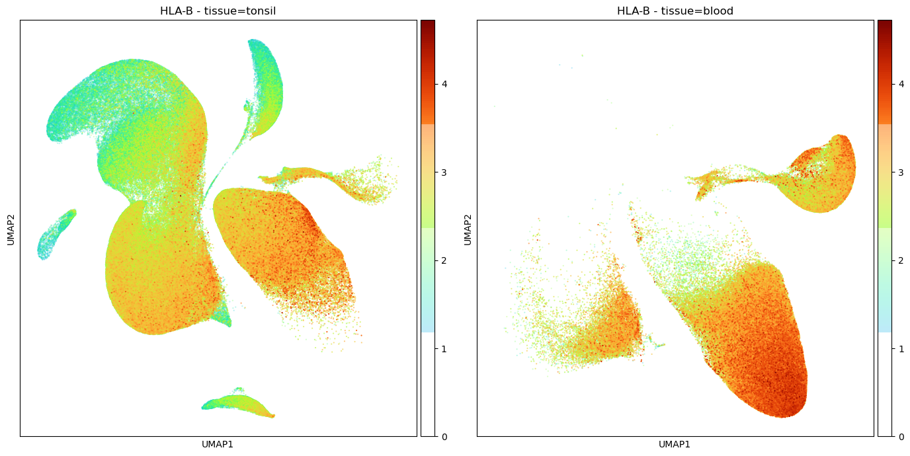
Volcano plots
[63]:
# Here we use random genes to show the feature, default is top 5 up and down
deg_df = adata.uns["rank_genes_groups"]
sc_plots.plot_volcano(
deg_df, genes=np.array(
deg_df["names"].tolist())[np.random.randint(0, len(deg_df) - 1, 20).tolist()],
spacing_factor = 1.5, # 1.15,
label_offset_px = 20, # 20.0,
text_shift_px = 10) # 12.0,)
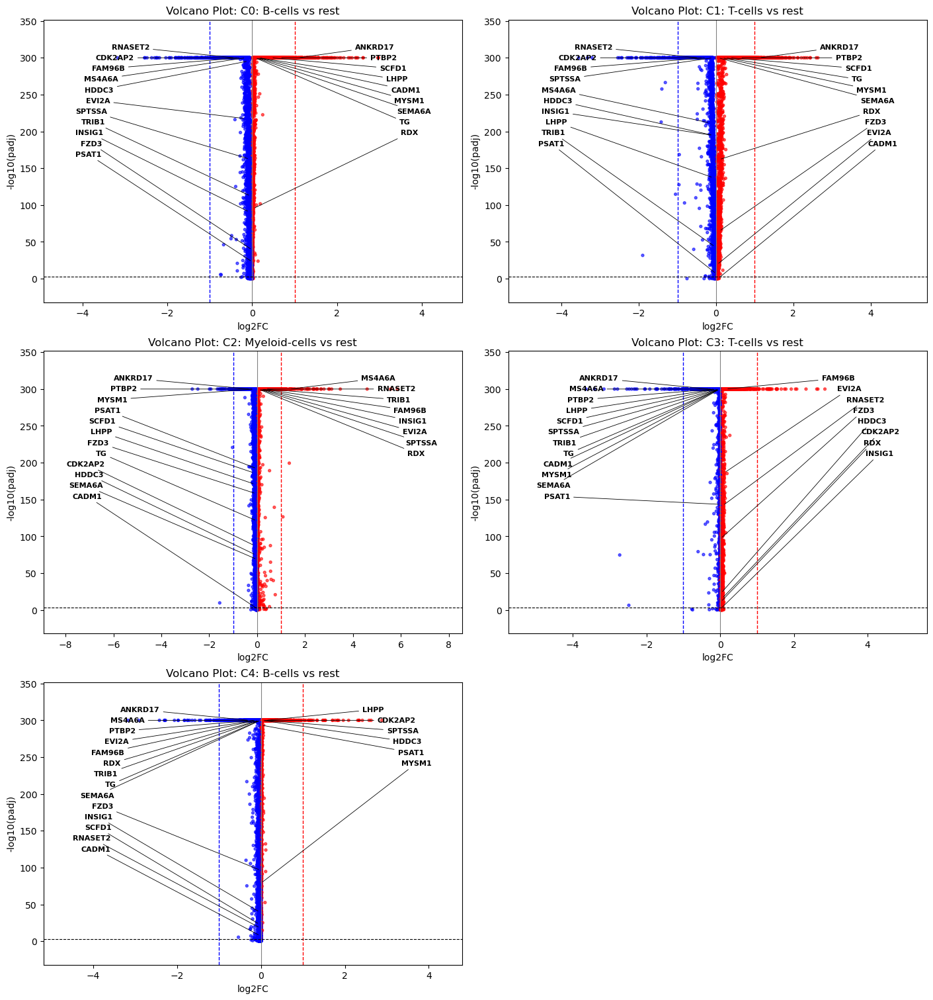
Full downstream plots and csvs
[64]:
# For reference check the docs of the sc_config or the code directly
# Here we set parameters to don't plot too much, it's just a showcase.
config = adata.uns["config"]
config["to_plot"]["down"]["visualize_leiden_umap"] = True
config["to_plot"]["cl"]["visualize_embedding_density_umap"] = True
config["to_plot"]["down"]["visualize_qc_umap"] = True # HERE
config["to_plot"]["cl"]["visualize_pca_variance_ratio"] = True
# ############################################################################################
# Visualize heatmaps based on medioids subclustering
config["to_plot"]["down"]["heatmaps"]["visualize"] = False
config["to_plot"]["down"]["cluster_violins"]["visualize"] = True
config["to_plot"]["down"]["cluster_dotplot"]["visualize"] = True
config["to_plot"]["down"]["cluster_dotplot"]["marker_mod"] = ["rna"]
config["to_plot"]["down"]["cluster_dotplot"]["marker_mod_per_cluster"] = ["rna"]
# Plot the gradient continuosF
config["to_plot"]["down"]["gradients_umap"]["continuos"] = True # HERE
# Optionally plot the gradient umaps in discretized version
config["to_plot"]["down"]["gradients_umap"]["discretize"] = False
config["to_plot"]["down"]["gradients_umap"]["num_ref_genes"] = 2
config["to_plot"]["down"]["gradients_umap"]["num_DEGs"] = 3
##############
# use highly variable
config["to_plot"]["down"]["gradients_umap"]["include_highly_variable"] = True # HERE
config["to_plot"]["down"]["gradients_umap"]["num_highly_variable"] = 2
# Save tables as different data types
config["general"]["save_df_types"] = [".csv", ".xlsx"]
[65]:
# Dummy subset to cluster 0 and 4 for faster plotting
clusters_to_use = ["C0: B-cells", "C2: Myeloid-cells"]
adata_ = adata[adata.obs["leiden"].isin(clusters_to_use)].copy()
adata_.uns["rank_genes_groups"] = adata_.uns["rank_genes_groups"][adata_.uns["rank_genes_groups"]["group"].isin(clusters_to_use)].copy()
[66]:
# THIS HAS TO BE USED WITH EXTREME CONCIOUSNESS and only used for plotting arguments or useless scanpy thing like overwriting "use_raw" = False
sc_config.update_key_in_config(adata_.uns["config"], key_to_update="cmap", new_value="turbo")
[67]:
%%time
# Define rcParams for customization, notebook showing is figure.dpi, reduce to not overload the nootebook sizes
# BUT!!!!!!! Here we convert the notebook to a html file to send it to the collaborators, reducing the figure.dpi
# will result in bad quality plots, which you don't want to copy out of the html report, so use also 400
plt.rcParams.update({
# "figure.figsize": (8, 6), # Figure size in inches
"savefig.dpi": 400, # Dots per inch for saved figures
"figure.dpi": 100, # Dots per inch for saved figures
#"axes.titlesize": 16, # Title font size
#"axes.labelsize": 14, # Label font size
#"xtick.labelsize": 12, # X-axis tick label size
#"ytick.labelsize": 12 # Y-axis tick label size
})
# And the automated Plotting/CSV saving close to everything adjustable via the config
# (thats why you will need some time to familiarize yourself with the config!)
# NOTE: It is actually not strictly necessary to run the downstream_preprocessing,
# because it is handled also by the function. But for the previous plots we needed the DEGs.
with plt.rc_context({'figure.dpi': 60, 'savefig.dpi': 60}):
sc_code.run_downstream(adata_, {})
WARNING:sc_code.py:run_downstream - Setting the X to log2norm_counts counts.
WARNING:sc_code.py:run_downstream - Setting the X to log2norm_counts counts.
INFO:sc_code.py:downstream_preprocessing - ################################################################################
Finished Downstream Preprocessing after 0.00 seconds
################################################################################
INFO:sc_code.py:downstream_preprocessing - ################################################################################
Finished Downstream Preprocessing after 0.00 seconds
################################################################################
INFO:sc_code.py:run_downstream - ########################################################################################################################
INFO:sc_code.py:run_downstream - ########################################################################################################################
INFO:sc_code.py:run_downstream - This set of figures visualizes Features in the UMAP Space
INFO:sc_code.py:run_downstream - This set of figures visualizes Features in the UMAP Space
INFO:sc_code.py:run_downstream - The figures are saved in analysis/figures/downstream/UMAP/
INFO:sc_code.py:run_downstream - The figures are saved in analysis/figures/downstream/UMAP/
INFO:sc_code.py:run_downstream - ########################################################################################################################
INFO:sc_code.py:run_downstream - ########################################################################################################################
INFO:sc_code.py:run_downstream - ################################################################################
INFO:sc_code.py:run_downstream - ################################################################################
INFO:sc_code.py:run_downstream - This Figure shows the unsupervised leiden Clustering,
INFO:sc_code.py:run_downstream - This Figure shows the unsupervised leiden Clustering,
INFO:sc_code.py:run_downstream - it is saved as: umap_leiden_clustering.pdf
INFO:sc_code.py:run_downstream - it is saved as: umap_leiden_clustering.pdf
INFO:sc_code.py:run_downstream - ################################################################################
INFO:sc_code.py:run_downstream - ################################################################################
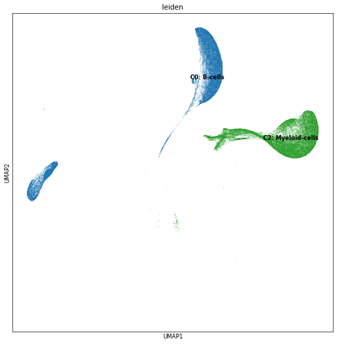
INFO:sc_code.py:run_downstream - ################################################################################
INFO:sc_code.py:run_downstream - ################################################################################
INFO:sc_code.py:run_downstream - This Figure shows Density of cells for each Sample or Condition
INFO:sc_code.py:run_downstream - This Figure shows Density of cells for each Sample or Condition
INFO:sc_code.py:run_downstream - it is saved as: umap_density_sample_type_.pdf
INFO:sc_code.py:run_downstream - it is saved as: umap_density_sample_type_.pdf
INFO:sc_code.py:run_downstream - ################################################################################
INFO:sc_code.py:run_downstream - ################################################################################
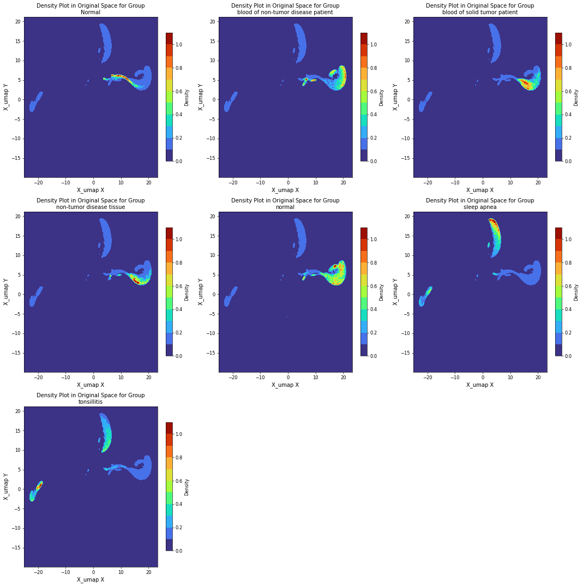
INFO:sc_code.py:run_downstream - ################################################################################
INFO:sc_code.py:run_downstream - ################################################################################
INFO:sc_code.py:run_downstream - This Figure shows Density of cells for each Sample or Condition
INFO:sc_code.py:run_downstream - This Figure shows Density of cells for each Sample or Condition
INFO:sc_code.py:run_downstream - it is saved as: umap_density_study_category_.pdf
INFO:sc_code.py:run_downstream - it is saved as: umap_density_study_category_.pdf
INFO:sc_code.py:run_downstream - ################################################################################
INFO:sc_code.py:run_downstream - ################################################################################
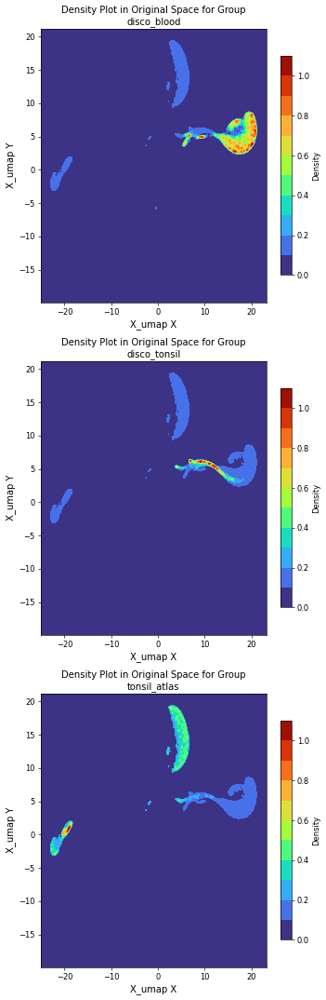
INFO:sc_code.py:run_downstream - ################################################################################
INFO:sc_code.py:run_downstream - ################################################################################
INFO:sc_code.py:run_downstream - This Figure shows Density of cells for each Sample or Condition
INFO:sc_code.py:run_downstream - This Figure shows Density of cells for each Sample or Condition
INFO:sc_code.py:run_downstream - it is saved as: umap_density_platform_.pdf
INFO:sc_code.py:run_downstream - it is saved as: umap_density_platform_.pdf
INFO:sc_code.py:run_downstream - ################################################################################
INFO:sc_code.py:run_downstream - ################################################################################
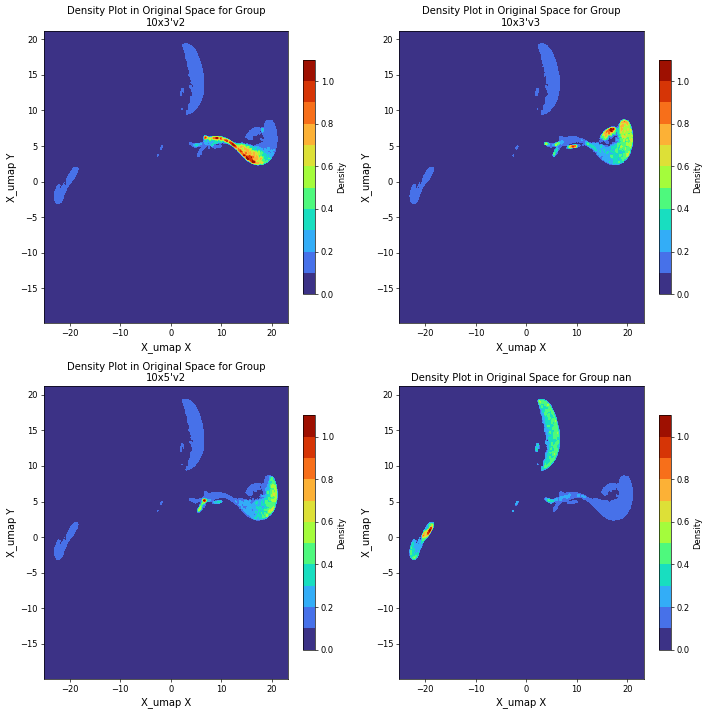
INFO:sc_code.py:run_downstream - ################################################################################
INFO:sc_code.py:run_downstream - ################################################################################
INFO:sc_code.py:run_downstream - This Figure shows Quality Control for Cells
INFO:sc_code.py:run_downstream - This Figure shows Quality Control for Cells
INFO:sc_code.py:run_downstream - it is saved as: umap__qc.pdf
INFO:sc_code.py:run_downstream - it is saved as: umap__qc.pdf
INFO:sc_code.py:run_downstream - ################################################################################
INFO:sc_code.py:run_downstream - ################################################################################
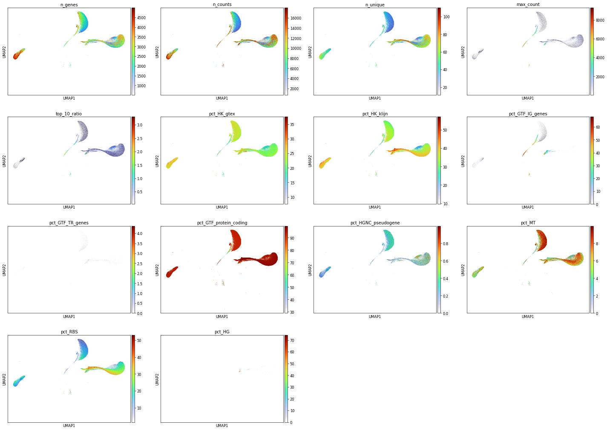
INFO:sc_plots.py:continuos_umap_helper - ################################################################################
INFO:sc_plots.py:continuos_umap_helper - ################################################################################
INFO:sc_plots.py:continuos_umap_helper - This Shows C0: B-cells_DEGs Genes gradients for each cell over the UMAP
INFO:sc_plots.py:continuos_umap_helper - This Shows C0: B-cells_DEGs Genes gradients for each cell over the UMAP
INFO:sc_plots.py:continuos_umap_helper - It is saved as: umap_C0: B-cells_DEGs_continuos.pdf
INFO:sc_plots.py:continuos_umap_helper - It is saved as: umap_C0: B-cells_DEGs_continuos.pdf
INFO:sc_plots.py:continuos_umap_helper - ################################################################################
INFO:sc_plots.py:continuos_umap_helper - ################################################################################
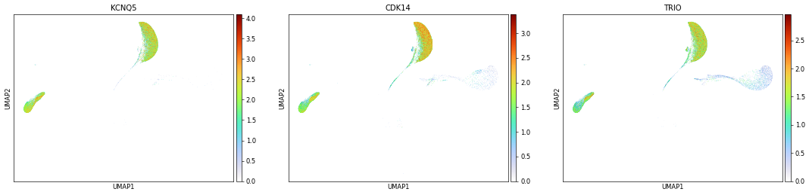
INFO:sc_plots.py:continuos_umap_helper - ################################################################################
INFO:sc_plots.py:continuos_umap_helper - ################################################################################
INFO:sc_plots.py:continuos_umap_helper - This Shows C2: Myeloid-cells_DEGs Genes gradients for each cell over the UMAP
INFO:sc_plots.py:continuos_umap_helper - This Shows C2: Myeloid-cells_DEGs Genes gradients for each cell over the UMAP
INFO:sc_plots.py:continuos_umap_helper - It is saved as: umap_C2: Myeloid-cells_DEGs_continuos.pdf
INFO:sc_plots.py:continuos_umap_helper - It is saved as: umap_C2: Myeloid-cells_DEGs_continuos.pdf
INFO:sc_plots.py:continuos_umap_helper - ################################################################################
INFO:sc_plots.py:continuos_umap_helper - ################################################################################
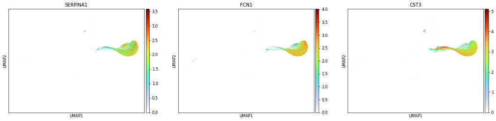
INFO:sc_plots.py:continuos_umap_helper - ########################################
INFO:sc_plots.py:continuos_umap_helper - ########################################
INFO:sc_plots.py:continuos_umap_helper - This Shows top2_highly_variable Genes gradients for each cell over the UMAP
INFO:sc_plots.py:continuos_umap_helper - This Shows top2_highly_variable Genes gradients for each cell over the UMAP
INFO:sc_plots.py:continuos_umap_helper - It is saved as: umap_top2_highly_variable_continuos.pdf
INFO:sc_plots.py:continuos_umap_helper - It is saved as: umap_top2_highly_variable_continuos.pdf
INFO:sc_plots.py:continuos_umap_helper - ########################################
INFO:sc_plots.py:continuos_umap_helper - ########################################
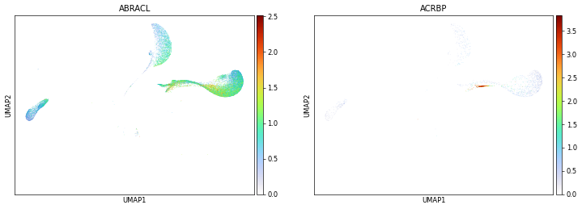
INFO:sc_code.py:run_downstream - ########################################################################################################################
INFO:sc_code.py:run_downstream - ########################################################################################################################
INFO:sc_code.py:run_downstream - This Shows Dotplots for the DEGs and/or Markers per Cluster.
INFO:sc_code.py:run_downstream - This Shows Dotplots for the DEGs and/or Markers per Cluster.
INFO:sc_code.py:run_downstream - The figures are saved in /downstream/Dotplots/
INFO:sc_code.py:run_downstream - The figures are saved in /downstream/Dotplots/
INFO:sc_code.py:run_downstream - ########################################################################################################################
INFO:sc_code.py:run_downstream - ########################################################################################################################
INFO:sc_code.py:run_downstream - ################################################################################
INFO:sc_code.py:run_downstream - ################################################################################
INFO:sc_code.py:run_downstream - This Shows Dotplots for the DEGs per Cluster.
INFO:sc_code.py:run_downstream - This Shows Dotplots for the DEGs per Cluster.
INFO:sc_code.py:run_downstream - NOTE: If DEGs are overlapping, they are shown only once and
INFO:sc_code.py:run_downstream - NOTE: If DEGs are overlapping, they are shown only once and
INFO:sc_code.py:run_downstream - if the number of genes per Cluster is not always the same and you want it
INFO:sc_code.py:run_downstream - if the number of genes per Cluster is not always the same and you want it
INFO:sc_code.py:run_downstream - (or vice versa), please ask your Collaboration partner of choice
INFO:sc_code.py:run_downstream - (or vice versa), please ask your Collaboration partner of choice
INFO:sc_code.py:run_downstream - The figures are saved in /downstream/Dotplots/DEG/
INFO:sc_code.py:run_downstream - The figures are saved in /downstream/Dotplots/DEG/
INFO:sc_code.py:run_downstream - ################################################################################
INFO:sc_code.py:run_downstream - ################################################################################
INFO:sc_plots.py:plot_per_group_DEG_dotplot_n_gene_dendrogram - The figure is saved as cluster_DEG_dotplot_top10_0.pdf
INFO:sc_plots.py:plot_per_group_DEG_dotplot_n_gene_dendrogram - The figure is saved as cluster_DEG_dotplot_top10_0.pdf
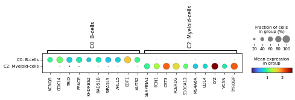
INFO:sc_code.py:run_downstream - ################################################################################
INFO:sc_code.py:run_downstream - ################################################################################
INFO:sc_code.py:run_downstream - This Shows Dotplots for the markers per Cluster.
INFO:sc_code.py:run_downstream - This Shows Dotplots for the markers per Cluster.
INFO:sc_code.py:run_downstream - NOTE: It is possible to subset these and you want it
INFO:sc_code.py:run_downstream - NOTE: It is possible to subset these and you want it
INFO:sc_code.py:run_downstream - please ask your Collaboration partner of choice.
INFO:sc_code.py:run_downstream - please ask your Collaboration partner of choice.
INFO:sc_code.py:run_downstream - The figures are saved in /downstream/Dotplots/markers/
INFO:sc_code.py:run_downstream - The figures are saved in /downstream/Dotplots/markers/
INFO:sc_code.py:run_downstream - ################################################################################
INFO:sc_code.py:run_downstream - ################################################################################
INFO:sc_plots.py:plot_ref_dotplots - The figure is saved as rna_cluster_marker_expression_group_FDC.pdf
INFO:sc_plots.py:plot_ref_dotplots - The figure is saved as rna_cluster_marker_expression_group_FDC.pdf
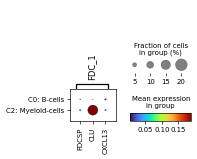
INFO:sc_plots.py:plot_ref_dotplots - The figure is saved as rna_cluster_marker_expression_group_Plasma.pdf
INFO:sc_plots.py:plot_ref_dotplots - The figure is saved as rna_cluster_marker_expression_group_Plasma.pdf
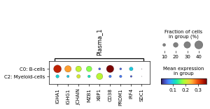
INFO:sc_plots.py:plot_ref_dotplots - The figure is saved as rna_cluster_marker_expression_group_Naive_B.pdf
INFO:sc_plots.py:plot_ref_dotplots - The figure is saved as rna_cluster_marker_expression_group_Naive_B.pdf
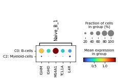
INFO:sc_plots.py:plot_ref_dotplots - The figure is saved as rna_cluster_marker_expression_group_GC_B_DZ.pdf
INFO:sc_plots.py:plot_ref_dotplots - The figure is saved as rna_cluster_marker_expression_group_GC_B_DZ.pdf
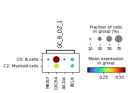
INFO:sc_plots.py:plot_ref_dotplots - The figure is saved as rna_cluster_marker_expression_group_GC_B_LZ.pdf
INFO:sc_plots.py:plot_ref_dotplots - The figure is saved as rna_cluster_marker_expression_group_GC_B_LZ.pdf
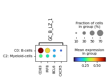
INFO:sc_plots.py:plot_ref_dotplots - The figure is saved as rna_cluster_marker_expression_group_Memory_B.pdf
INFO:sc_plots.py:plot_ref_dotplots - The figure is saved as rna_cluster_marker_expression_group_Memory_B.pdf
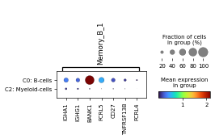
INFO:sc_plots.py:plot_ref_dotplots - The figure is saved as rna_cluster_marker_expression_group_Transitional_B.pdf
INFO:sc_plots.py:plot_ref_dotplots - The figure is saved as rna_cluster_marker_expression_group_Transitional_B.pdf
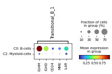
INFO:sc_plots.py:plot_ref_dotplots - The figure is saved as rna_cluster_marker_expression_group_DC.pdf
INFO:sc_plots.py:plot_ref_dotplots - The figure is saved as rna_cluster_marker_expression_group_DC.pdf
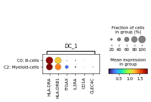
INFO:sc_plots.py:plot_ref_dotplots - The figure is saved as rna_cluster_marker_expression_group_Epithelial.pdf
INFO:sc_plots.py:plot_ref_dotplots - The figure is saved as rna_cluster_marker_expression_group_Epithelial.pdf
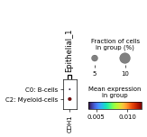
INFO:sc_plots.py:plot_ref_dotplots - The figure is saved as rna_cluster_marker_expression_group_Granulocyte.pdf
INFO:sc_plots.py:plot_ref_dotplots - The figure is saved as rna_cluster_marker_expression_group_Granulocyte.pdf
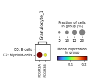
INFO:sc_plots.py:plot_ref_dotplots - The figure is saved as rna_cluster_marker_expression_group_Macrophage.pdf
INFO:sc_plots.py:plot_ref_dotplots - The figure is saved as rna_cluster_marker_expression_group_Macrophage.pdf
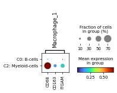
INFO:sc_plots.py:plot_ref_dotplots - The figure is saved as rna_cluster_marker_expression_group_Monocyte.pdf
INFO:sc_plots.py:plot_ref_dotplots - The figure is saved as rna_cluster_marker_expression_group_Monocyte.pdf
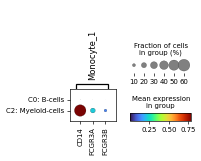
INFO:sc_plots.py:plot_ref_dotplots - The figure is saved as rna_cluster_marker_expression_group_Myeloid.pdf
INFO:sc_plots.py:plot_ref_dotplots - The figure is saved as rna_cluster_marker_expression_group_Myeloid.pdf
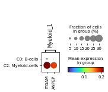
INFO:sc_plots.py:plot_ref_dotplots - The figure is saved as rna_cluster_marker_expression_group_T_cell.pdf
INFO:sc_plots.py:plot_ref_dotplots - The figure is saved as rna_cluster_marker_expression_group_T_cell.pdf
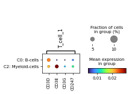
INFO:sc_plots.py:plot_ref_dotplots - The figure is saved as rna_cluster_marker_expression_group_CD4_T.pdf
INFO:sc_plots.py:plot_ref_dotplots - The figure is saved as rna_cluster_marker_expression_group_CD4_T.pdf
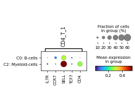
INFO:sc_plots.py:plot_ref_dotplots - The figure is saved as rna_cluster_marker_expression_group_CD8_T.pdf
INFO:sc_plots.py:plot_ref_dotplots - The figure is saved as rna_cluster_marker_expression_group_CD8_T.pdf
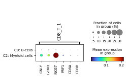
INFO:sc_plots.py:plot_ref_dotplots - The figure is saved as rna_cluster_marker_expression_group_NK.pdf
INFO:sc_plots.py:plot_ref_dotplots - The figure is saved as rna_cluster_marker_expression_group_NK.pdf
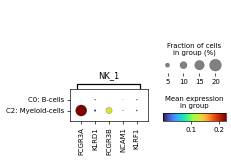
INFO:sc_plots.py:plot_ref_dotplots - The figure is saved as rna_cluster_marker_expression_group_Immune_general.pdf
INFO:sc_plots.py:plot_ref_dotplots - The figure is saved as rna_cluster_marker_expression_group_Immune_general.pdf
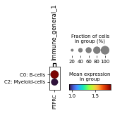
INFO:sc_code.py:run_downstream - ########################################################################################################################
INFO:sc_code.py:run_downstream - ########################################################################################################################
INFO:sc_code.py:run_downstream - This Shows Stacked Violinplots for the DEGs and/or Markers per Cluster.
INFO:sc_code.py:run_downstream - This Shows Stacked Violinplots for the DEGs and/or Markers per Cluster.
INFO:sc_code.py:run_downstream - The figures are saved in /downstream/Violinplots/
INFO:sc_code.py:run_downstream - The figures are saved in /downstream/Violinplots/
INFO:sc_code.py:run_downstream - ########################################################################################################################
INFO:sc_code.py:run_downstream - ########################################################################################################################
INFO:sc_code.py:run_downstream - ################################################################################
INFO:sc_code.py:run_downstream - ################################################################################
INFO:sc_code.py:run_downstream - This Shows Stacked Violinplots for the DEGs per Cluster.
INFO:sc_code.py:run_downstream - This Shows Stacked Violinplots for the DEGs per Cluster.
INFO:sc_code.py:run_downstream - NOTE: If DEGs are overlapping, they are shown only once and
INFO:sc_code.py:run_downstream - NOTE: If DEGs are overlapping, they are shown only once and
INFO:sc_code.py:run_downstream - if the number of genes per Cluster is not always the same and you want it
INFO:sc_code.py:run_downstream - if the number of genes per Cluster is not always the same and you want it
INFO:sc_code.py:run_downstream - (or vice versa), please ask your Collaboration partner of choice
INFO:sc_code.py:run_downstream - (or vice versa), please ask your Collaboration partner of choice
INFO:sc_code.py:run_downstream - The figures are saved in /downstream/Violinplots/DEG/
INFO:sc_code.py:run_downstream - The figures are saved in /downstream/Violinplots/DEG/
INFO:sc_code.py:run_downstream - ################################################################################
INFO:sc_code.py:run_downstream - ################################################################################
INFO:sc_plots.py:plot_per_group_stacked_violins - The figure is saved as cluster_DEG_dotplot_cluster_C0: B-cells_top20.pdf
INFO:sc_plots.py:plot_per_group_stacked_violins - The figure is saved as cluster_DEG_dotplot_cluster_C0: B-cells_top20.pdf
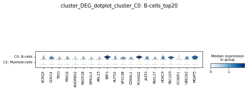
INFO:sc_plots.py:plot_per_group_stacked_violins - The figure is saved as cluster_DEG_dotplot_cluster_C2: Myeloid-cells_top20.pdf
INFO:sc_plots.py:plot_per_group_stacked_violins - The figure is saved as cluster_DEG_dotplot_cluster_C2: Myeloid-cells_top20.pdf
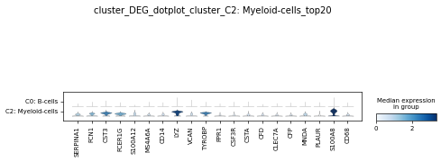
INFO:sc_code.py:run_downstream - ########################################################################################################################
INFO:sc_code.py:run_downstream - ########################################################################################################################
INFO:sc_code.py:run_downstream - Saving Cluster stats at: analysis/DEGs/
INFO:sc_code.py:run_downstream - Saving Cluster stats at: analysis/DEGs/
INFO:sc_code.py:run_downstream - ########################################################################################################################
INFO:sc_code.py:run_downstream - ########################################################################################################################
INFO:sc_code.py:run_downstream - ########################################################################################################################
INFO:sc_code.py:run_downstream - ########################################################################################################################
INFO:sc_code.py:run_downstream - Saving Marker gensets at: analysis/markers/
INFO:sc_code.py:run_downstream - Saving Marker gensets at: analysis/markers/
INFO:sc_code.py:run_downstream - ########################################################################################################################
INFO:sc_code.py:run_downstream - ########################################################################################################################
INFO:sc_utils.py:save_genesets_to_csv - All entries under 'genesets' have been saved to analysis/markers/
INFO:sc_utils.py:save_genesets_to_csv - All entries under 'genesets' have been saved to analysis/markers/
INFO:sc_code.py:run_downstream - ################################################################################
Finished Downstream Visualisations after 128.7599000930786 seconds
################################################################################
INFO:sc_code.py:run_downstream - ################################################################################
Finished Downstream Visualisations after 128.7599000930786 seconds
################################################################################
CPU times: user 5min 10s, sys: 1.4 s, total: 5min 12s
Wall time: 2min 9s
[70]:
# Save the DEGs as csv
sc_utils.get_DEG_gene_csvs(adata)
Rest
[72]:
sc_code.save_h5ad(adata, "../data/04_tonsil_blood_DISCO_clustered_downstream_processed.h5ad", compression="lzf")
[ ]: